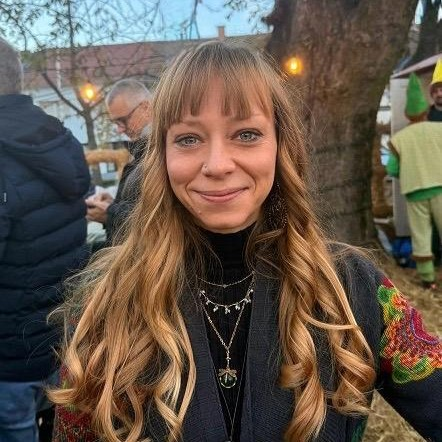

O meni

Sara Spence
Ja sam Sara Spence, po struci psiholog i životni trener (Life coach). Kroz svoj životni vijek prošla sam brojne izazove i prepreke koji su me izgradili u osobu koja sam sada. Prošla sam preseljenje u drugu državu, gubitak supruga početkom 2017. godine, bolest i gubitak majke te povratak u Hrvatsku nakon šest godina života u inozemstvu. Kako bih se nosila s izazovima i promjenama, morala sam naučiti kako prepreke tretirati kao prilike za rast, doći u kvalitetniji kontakt sa sobom, svojim potrebama i emocijama te kako ostvariti i stvoriti sebe ponovno, u novim okolnostima.
Naučiti voljeti sebe, i postati sama sebi najbolji prijatelj, roditelj i navijač, najteži je izazov s kojim sam se susrela, ali i najveći dar koji sam si ikada mogla dati. Kroz svoj osobni put, uvidjela sam vrijednost upoznavanja i rada na sebi, ne samo za sebe, već i kroz utjecaj koji moj rad ima na druge ljude oko mene.
Moj glavni cilj sada je iskoristiti sva znanja, iskustva, tehnike i metode koje sam kroz 10 godina rada usavršila, kako bih Vas podržala u ostvarenju Vaših najvećih potencijala i izgradnji života koji volite živjeti. U srži mog rada jest razumijevanje, poštovanje i izgradnja sigurnog prostora za istraživanje i rad.
Duboko vjerujem da je svatko od nas sposoban za promjenu te da smo mi sami najbolji resurs za vlastiti život. Ipak, na tome putu nam povremeno može biti potrebna pomoć. Zato ne nudim gotova rješenja, već Vam pomažem pronaći upravo ona koja su najbolja za Vas. Pritom svoj pristup i metode prilagođavam upravo Vašim jedinstvenim potrebama i karakteristikama, bilo da se radi o znanstveno utemeljenim praksama i principima, ili onima koja spajaju duhovnost sa znanošću.
Edukacije, certifikati i prakse
- 2011. Magistra psihologije, Filozofski fakultet Sveučilišta u Zagrebu
- 2014. – 2020. Život i rad u Velikoj Britaniji
- 2018. nadalje – praksa joge i mindfulness meditacije
- 2019. Konferencija Gregg Braden, Amsterdam
- 2019. Inka I inicijacija, Zagreb
- 2021. nadalje – ples 5 ritmova, pohađanje različitih vrsta psihoterapije (dva navrata), druge radionice i prakse
- 2024. Reiki Holy Fire III – stupanj I i II inicijacija (vikend intenzivi jedan na jedan, online)
- 2020. – 2025. Zaposlena u DEKRA-i zapošljavanje kao HR Consultant
- 2025. NLP – Neuro Linguistic Programming: Your Ultimate Guide To NLP, by Advanced Ideas via alison.com, online
- 2025. REBT – The Science Of Re-Programming Your Mind!, by Advanced Ideas via alison.com, online
- 2025. How to process emotions (Kako procesirati emocije), by Therapy in a Nutshell, online tečaj
- 2025. Grounding skills for anxiety i Anxiety skills (Tehnike uzemljavanja i vještine nošenja s tjeskobom), by Therapy in a Nutshell, online
- 2026. Dipl. Životni trener (Life Coach, online)